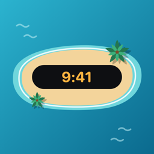

다이나믹 아일랜드 시계
어떤 앱을 쓰고 있어도 다이나믹 아일랜드와 잠금 화면에서 초 단위로 시간을 확인해요. iOS 27 이상에서는 가로 모드에서도 표시돼요.

SomTime
영상을 보면서도 화면을 건드리지 않고
다이나믹 아일랜드와 PiP로 시간을 확인하세요.
어떤 앱을 쓰고 있어도 다이나믹 아일랜드와 잠금 화면에서 초 단위로 시간을 확인해요. iOS 27 이상에서는 가로 모드에서도 표시돼요.
영상 위에 작은 창으로 시계를 띄워요. 얇은 10:1 막대와 2:1 창 중에서 고를 수 있고, 다이나믹 아일랜드가 없는 기기에서도 쓸 수 있어요.
사이트 주소만 입력하면 그 사이트의 서버 시각에 맞춰요. 내 폰보다 몇 초 빠르거나 느린지 보여 주고, PiP에서는 밀리초까지 표시해요.
정각 클릭 연습과 포도알 클릭 연습으로 실제 예매 전에 손을 풀어 보세요.
기본 · 굵게 · 모노 · 도트 4가지 디자인과 6가지 색상, 12/24시간 형식과 초 표시를 원하는 대로 골라요.